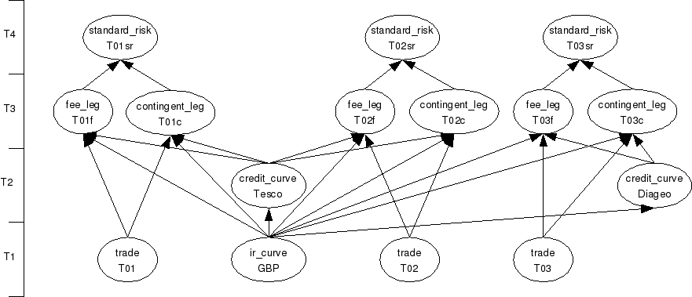

| Download version | 1.0 |
| Download licence | BSD |
| Trad4 version | 2.0.4 |
| Author | schevans |
| Date | 18-03-2009 |
This application is based on the ISDA CDS Standard Model (version 1.7), developed and supported in collaboration with Markit Group Ltd. The original code is available here: http://www.cdsmodel.com/
The jpm_cds application is a port of the ISDA application to the trad4 architecture.
This release (v1.0) represents Phase1 of this project and is simply a trad4 wrapper around the ISDA function calls. Phase2 will represent a full port, where all the underlying structures and functions become fully intergrated into jpm_cds.
The model is very similar to that of bond_risk, discussed at length in the trad4 manual. The idea is to get the computationally expensive parts of pricing a trade (in this case the ir and credit curve bootstrapping) to persist so that any objects that depend on this result can re-use them.
From the abstract diagram we can see that the two legs are valued concurrently, and their pvs are aggregated in standard_risk.

We can see the advantages of the trad4 approach more clearly in the concrete diagram. This shows one ir_curve (GBP), two credit_curves (Tesco and Diageo) and three trades against those curves, two against Tesco (T01 and T02 - trade or ticket numbers) and one against Diegeo (T03). T01f and T01c are the fee and contingent legs corresponding to T01, and T01sr is the standard_risk (aka pv) of T01. In practise you would have a handfull of ir_curves, hundreds of credit_curves and thousands of trades.
From this we can see that should the Tesco credit_curve move (or 'be marked' in the parlance) then the Tesco curve would need to be re-calculated once, the T01f, T01c, T02f and T02c would all run concurrently. Lastly T01sr and T02sr would fire, producing the new pvs of these trades.
The t4 files are available here
As mentioned above, this Phase1 release simply hooks into the ISDA functions. There are many problems with this approach. It might be worth you re-reading section 5.1 - "Porting your existing applications to trad4" of the manual to refresh your memory on the kinds of issues faced when porting a classically-architectured application to trad4. I'll step through some of these issues here in relation to this port.
Firstly, we have no guarantee the ISDA model is thread-safe. Even if it were thread-safe in the classical sense (with mutex locks round shared resources) this still wouldn't fit with the trad4 model of thread-safety where we know no two objects will be writing to the same thing at the same time, and likewise we know no object will be being written to while it's being read from.
In fact from what I've seen of the codebase I think the IDSA code is thread-safe and Phase1 would scale across thousands of trades and scores of threads. One exception is the error handling - the JpmcdsErrMsgOff mechanism - which writes to a global buffer which is written to a file on exit. This wouldn't cause any catastrophic problems but would result in a garbled log file.
There also seem to be some caches used (for holiday calenders). These seem to be read-only, but we'd still need a mechanism for adding a new holiday intra-day.
All the same, short of stepping through each function call we can't be 100% certain that the underlying functions are going to behave the way we expect.
Another issue with Phase1 is that the ISDA code news-off the required structures and returns a pointer to the calling function. For example, the TCurve structure which hold the bootstrapped curves and makes up the pub section of ir_ and credit_curve is newed-off in the ISDA internals. While this approach 'works' as far as we're concerned (we assign this pointer to the pub struct) it creates an obvious memory leak. Each call to JpmcdsBuildIRZeroCurve will new-off an new TCurve and pass the result back. We discard any reference to the old TCurve struct when we assign the new one.
While we could just manage the memory better by deleting the old one, it would be better to have the one structure persist. The reason we would want to do that is, if only the last IR mark changed (e.g. that corresponding to date 151943), we wouldn't need to re-bootstrap the whole curve - only the last period.
Likewise consider the two legs - fee_leg and contingent_leg - with their respective calls to JpmcdsCdsFeeLegPV and JpmcdsCdsContingentLegPV. Both of these ISDA calls construct the respective leg, price it, and delete it. This is not in keeping with the trad4 philosophy. While both legs do need to be constructed, they don't need to be reconstructed each time an IR rate moves - the IR rate move has no bearing on the leg itself, only on the value of that leg, so let the legs persist between the two valuations. The only time we need change the leg is when the trade to which it subscribes changes, for example in the case of a start date correction.
The IDSA model only produced pv. As we're already bootstrapping the credit_curve, there's little overhead of also bootstrappin the credit_curve perturbed by +-1bp and using these curves to calculate the cr01 (cr01 being the shift in pv given a +-1bp shift in the credit_curve). This would involve extending the TCurve structure to add:
TRatePt* fArray_p01 TRatePt* fArray_m01
These arrays would hold the credit_curve (for cr01) or ir_curve (for dv01) perturbed up and down by 1bp. Then the legs would also produce pvcrp01, pvcrm01, pvdvp01 and pvdvm01 which would be used in standard_risk to aggregate into trade-level cr01 and dv01.
Likewise we could produce cr01 by gridpoint, by introducing a range of fArrays corresponding to a range of curves perturbed by gridpoint. This would produce a ladder of cr01s. This would come at the expense of a fair bit of RAM, but as the number of curves is relatively low compared to the number of trades this should not present a problem in practice.
The interesting thing about this project is that this is the first time I've ported an existing application to trad4. This means the application hasn't been worked-up with trad4 in mind, and puts interesting stresses and strains onto the precompiler.
While I've done quite a lot of work on the precompiler while working on this project (particularly relating to support for structs), it's becoming increasingly apparent that the existing architecture of the trad4 precompiler is becoming unmanageable.
I've started work on precompiler_v3, which should start to replace the code under PreComp from the inside-out. There should be no functional changes except for some added features that are simply too fiddly to add to the current architecture.
For this reason in this release I've had to work around some of these restrictions in the precompiler rather than fix them. See types/rates/dates in ir_curve.t4, and the ONE constant - required because stand-alone structs aren't supported.
To run the application:
1) Download and unpack the distribution3) Source jpm_cds.conf:$ cd trad4_v2_0_4/jpm_cds
4) Start jpm_cds:jpm_cds$ . ./jpm_cds.conf
jpm_cds$ jpm_cds
To increase or decrease the number of threads used (the default is 4), set NUM_THREADS and re-start the application:
$ export NUM_THREADS=64 $ jpm_cds
To update a running system, log into the database:
$ t4db SQL>
And make any required updates. Then instruct the running application to collect these changes by using send_reload.sh:
$ send_reload.sh
Firstly, should you run the precompiler, expect to see a warning about the Makefile under jpm_cds/lib. This is due to the partial nature of the integration between the two systems in the Phase1 release. Please ignore this warning.
Secondly, should you wish to rebuild the ISDA binaries, do so as follows:
jpm_cds$ cd objects/isda_cds_model_c_v1.7/lib/build/lib/linux linux$ make clean linux$ make